Linda – AI Interview
AI-Led First-Round Technical, Coding & Voice Interviews with Evidence-Backed Scorecards
.svg)


Key Highlights
Multi-Turn Voice & Coding
Linda conducts real-time conversational voice interviews, live in-browser coding tests, and written assessments tailored for developers.
5-Dimension Evidence Rubrics
Scores candidates objectively on Attitude, Coding, Learn & Apply, and Oral English with exact quoted evidence from candidate transcripts.
Anti-Cheat & Keystroke Signals
Monitors paste velocity, keystroke patterns, and external LLM assistance anomalies to guarantee candidate authenticity and assessment integrity.
Multi-LLM & Speech Engines
Plug-and-play support for Anthropic Claude (Haiku & Sonnet), OpenAI GPT-4o, Groq, Deepgram STT, and ElevenLabs TTS audio models.
Sandboxed Code Verification
Executes applicant coding submissions safely in a secure sandbox against test assertions with execution logs and runtime validation.
Human-in-the-Loop Decision Gate
Recruiters maintain 100% control. A dedicated triage cockpit allows review, notes, stage advances, or rejections with a single click.
Automate first-round interviews, eliminate manual screening fatigue, and identify top technical talent effortlessly.


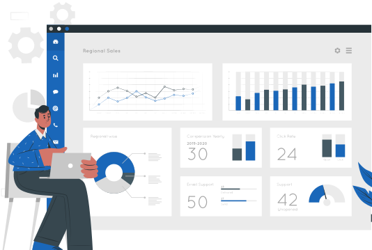
1. Global Settings & Interview Configuration
Navigate to Recruitment → Configuration → Settings to activate the Linda AI Interview suite. Configure primary LLM providers, assign default voice synthesizer models, and establish company-wide interview guardrails with instant links to Providers, Question Bank, and Rubrics.
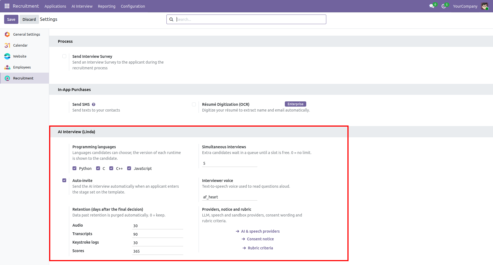
2. AI & Speech Providers Menu
Access the comprehensive AI Interview (Linda) → AI & speech providers view. Manage specialized AI adapters across roles: Anthropic Claude for deep reasoning and live interview dialogue, Deepgram for speech-to-text, and ElevenLabs for natural conversational audio generation.
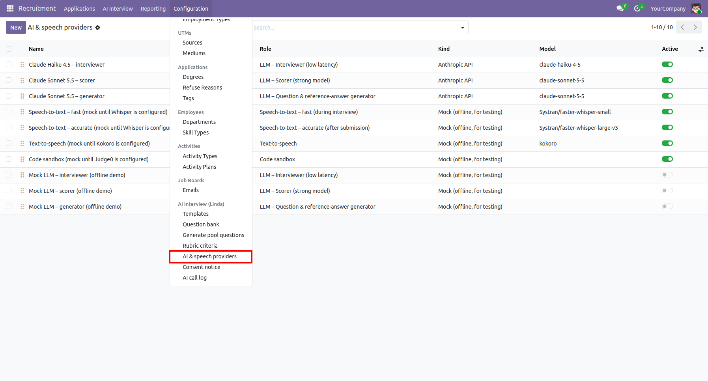
3. Provider Setup & Instant Connectivity Test
Configure API credentials, target models (e.g. claude-haiku-4-5), and role assignments. Click the Test Connection button to perform a live handshake ping with the AI server, providing instant visual confirmation with a green notification banner.
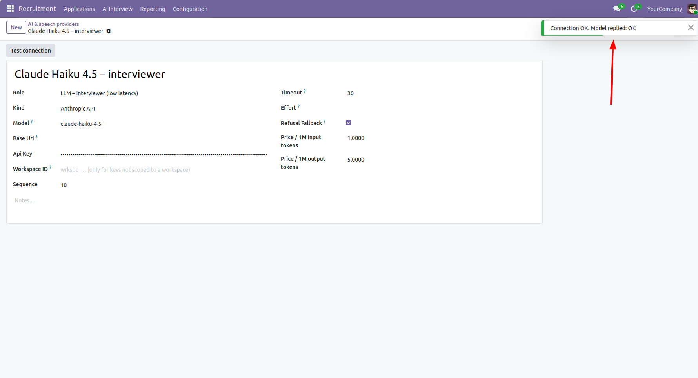
4. Role-Tailored Interview Templates & Section Builder
Build modular, multi-phase interview templates (e.g., Fresher Odoo Developer – First Round). Define distinct sequential sections including warm-up questions, interactive coding challenges, learn-and-apply exercises, and conversational voice rounds with customized time allocations.
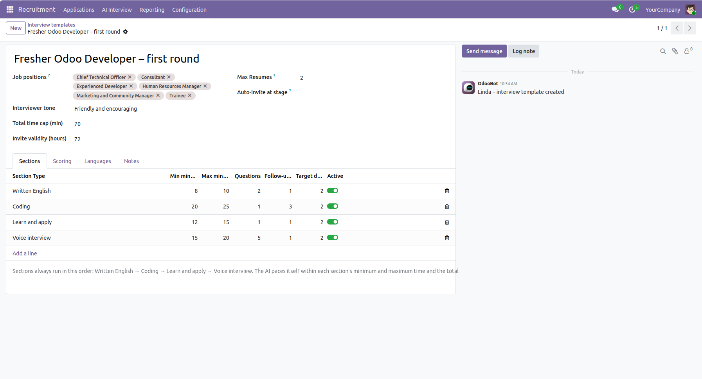
5. Curated Question Bank & Classification
Maintain a centralized library of technical questions categorized by type: Coding, Learn and apply, Voice, and Written English. Each item includes approval status badges, target job roles, difficulty levels, and hidden verification test cases.
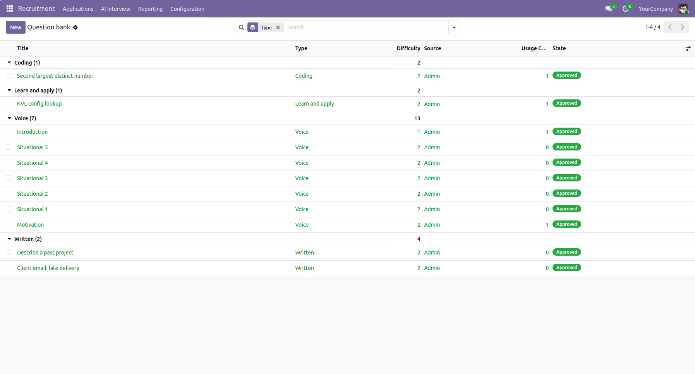
6. AI-Assisted Question Generator Wizard
Expand your technical questions instantly using the Generate Pool Questions wizard. Specify target topics, role profiles, and difficulty levels; the AI generates high-quality technical challenges, reference solutions, and test assertions ready for review.
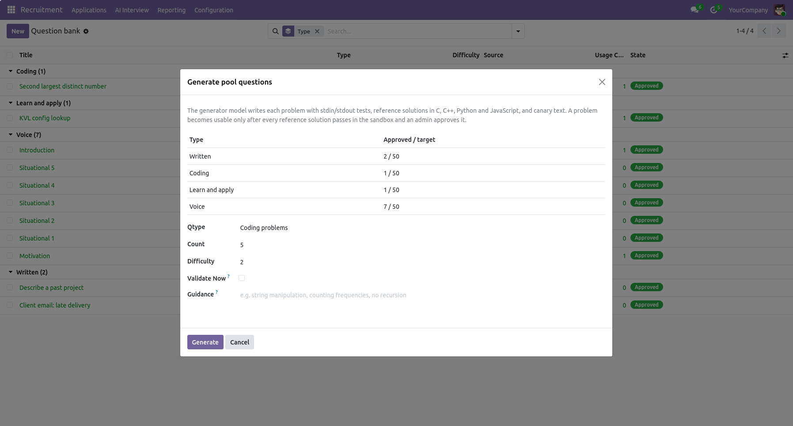
7. Objective Multi-Dimensional Rubric Criteria
Standardize candidate evaluation across four foundational dimensions: Attitude & Professionalism, Coding Competency, Learning Agility, and Oral English Communication. Ensures consistent, unbiased scoring across all applicants.
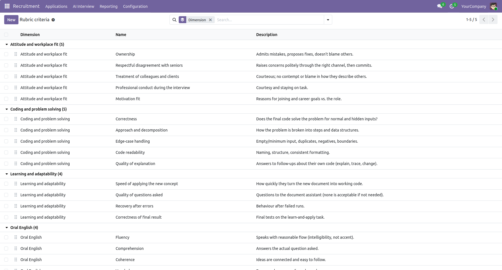
8. Candidate Privacy & Consent Notices
Comply with global privacy regulations (GDPR & local data protection laws). Maintain version-controlled consent notices informing candidates about AI evaluation, audio recording, data retention policies, and explicit opt-in agreements.
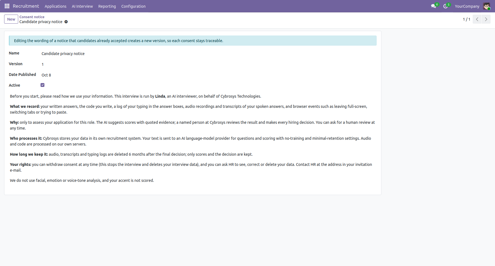
9. High-Volume Intake Recruitment Campaigns
Manage high-volume campus hiring or batch recruitment drives using Intake Campaigns. Monitor invitations sent, completion rates, and average scores from an active dashboard to streamline candidate throughput.
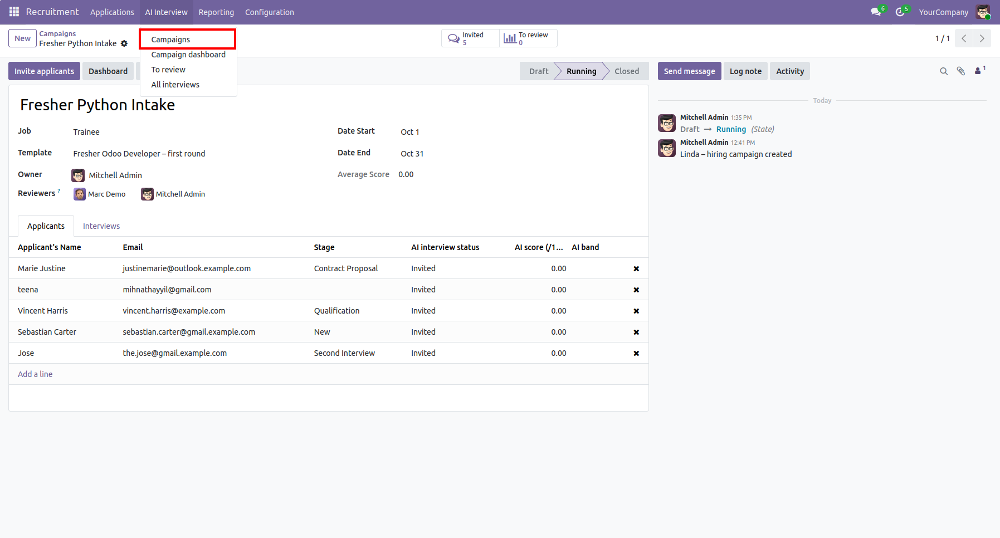
10. One-Click AI Interview Dispatch from Applicant Pipeline
Seamlessly embedded into standard Odoo Recruitment. On any applicant card (e.g. Sara - Trainee), recruiters can dispatch an invitation with a single click using the dedicated Send AI Interview button.
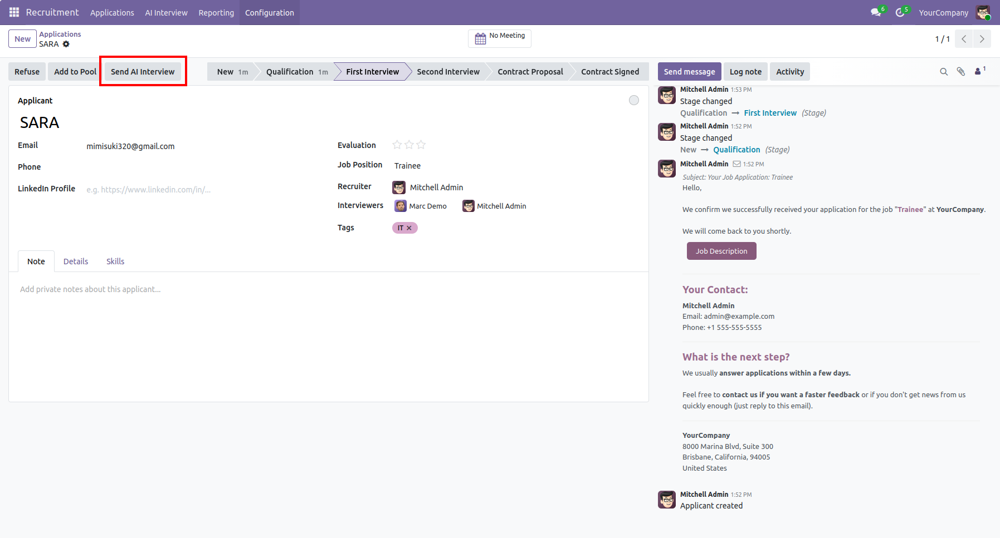
11. Real-Time Smart Button Counters & Chatter Logs
Every dispatched interview increments the AI Interviews smart counter button and logs a detailed message into the Odoo chatter with direct links to the generated candidate session.
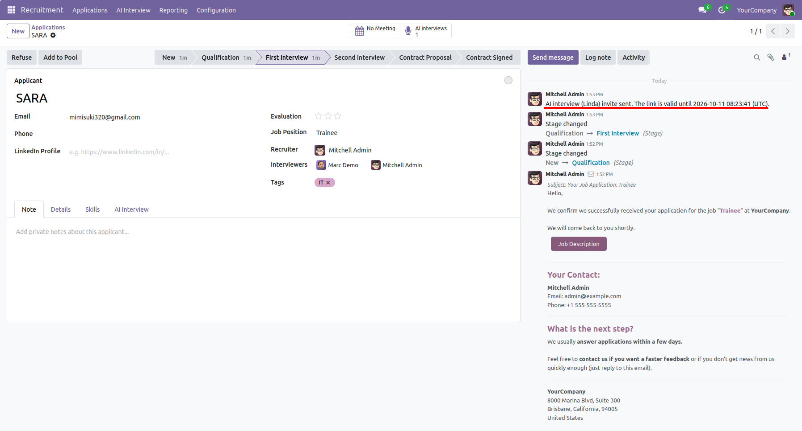
12. Responsive Candidate Invitation Email
Candidates receive an automated, mobile-friendly invitation email containing interview expectations, section overviews, and a secure, time-limited Start the interview access token.
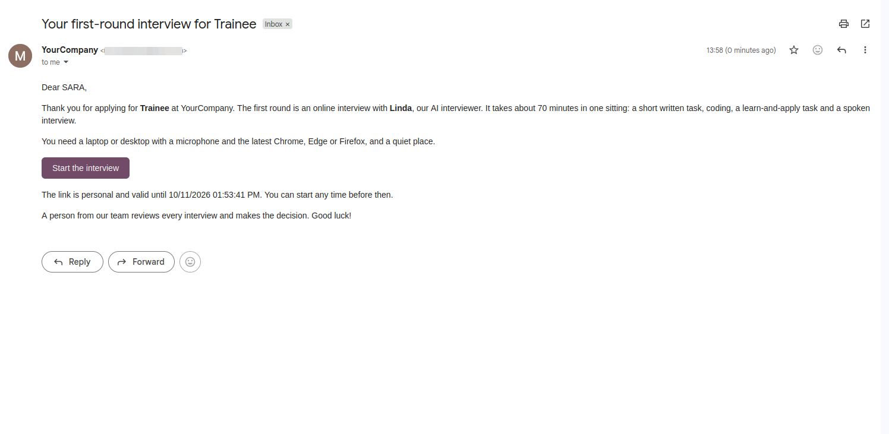
13. Candidate Portal - Welcome & Privacy Agreement
Candidates land on a clean, modern portal welcoming them by name. Linda explains the interview layout, equipment requirements, and presents clear privacy terms requiring candidate acknowledgment before entering.
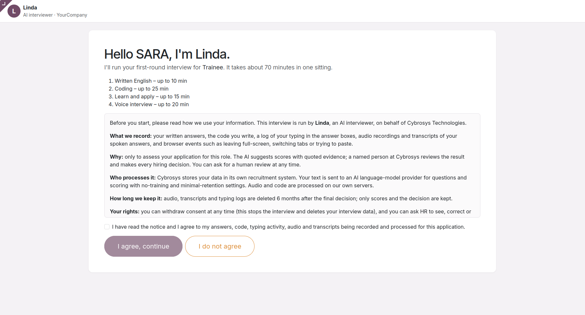
14. Pre-Flight Audio & Hardware System Verification
An automated pre-flight technical check validates browser compatibility, requests microphone permissions, and tests real-time audio input levels to ensure candidates experience zero disruptions during the voice round.
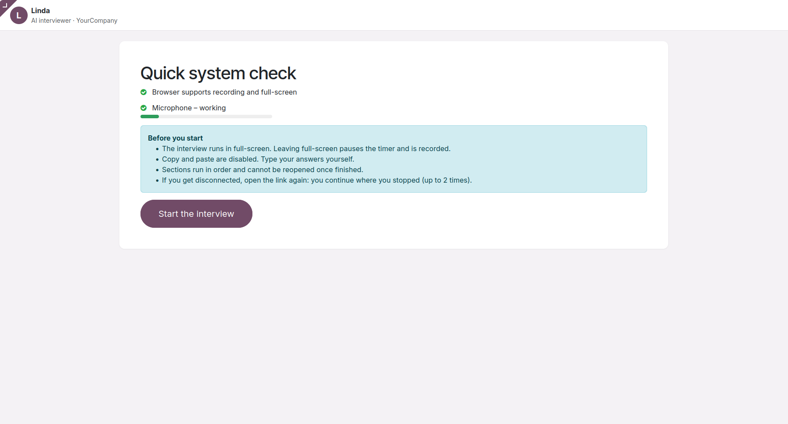
15. Candidate Interview Submission & Completion
Upon completing the final section, candidate answers, code solutions, and audio recordings are securely synchronized with Odoo. A friendly confirmation message informs the applicant that results are under review.
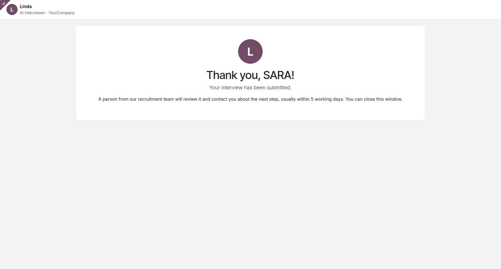
16. Recruiter "To Review" Triage Dashboard
Recruiters access the dedicated To Review triage queue. Completed interviews display aggregate scores (e.g. 60.00 / 100), recommendation badges (Advance, Borderline, Reject), risk flags, and red flag counters.
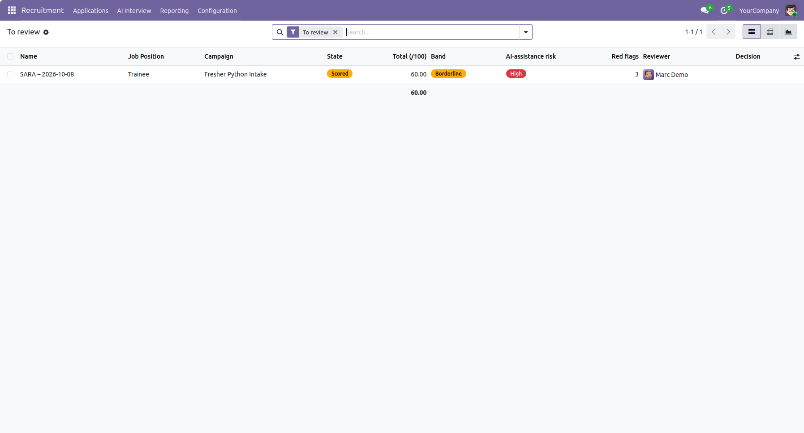
17. In-Depth Candidate Scorecard & Dimension Breakdown
Drill down into the session form's Scores tab to inspect granular sub-scores across all evaluation dimensions, risk indicators (paste speed, AI assistance cues), sandbox execution outputs, and scheduled reviewer activities.
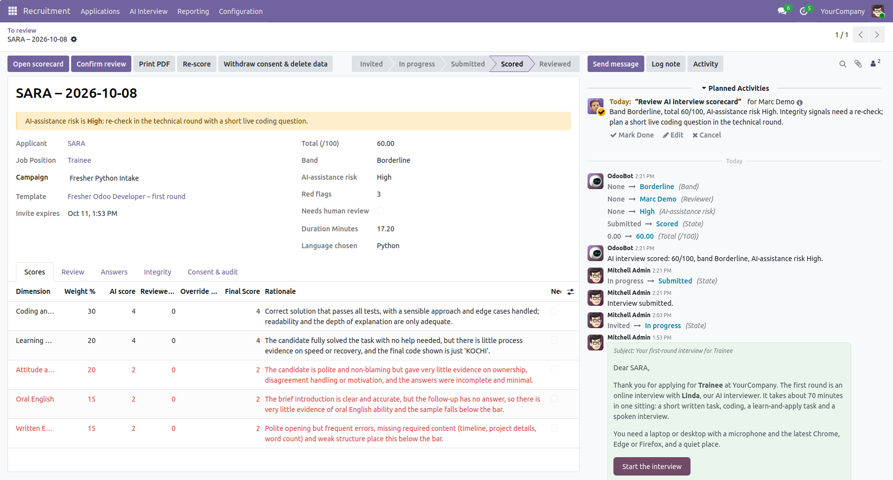
18. Human-in-the-Loop Review Gate & Hiring Decision
Human recruiters retain ultimate decision authority. Under the Review tab, choose the final outcome (Advance to technical round, Reject, or Keep on file), document feedback, and click Confirm review.
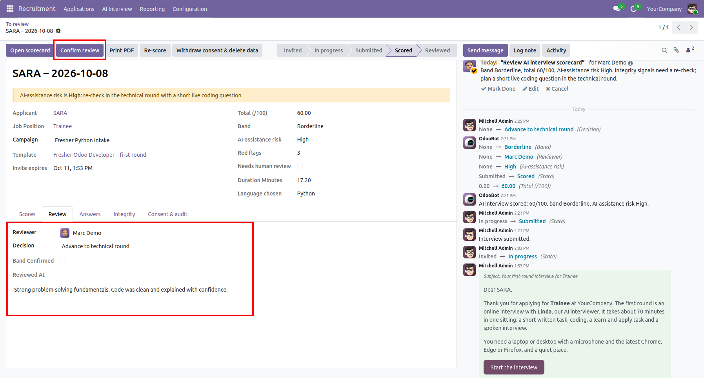
19. Locked Review Confirmation & Audit Traceability
Once confirmed, the session shifts to Reviewed state. Reviewer identity, timestamps, and decision notes are permanently locked into the audit trail, automatically marking recruiter schedule tasks as done.
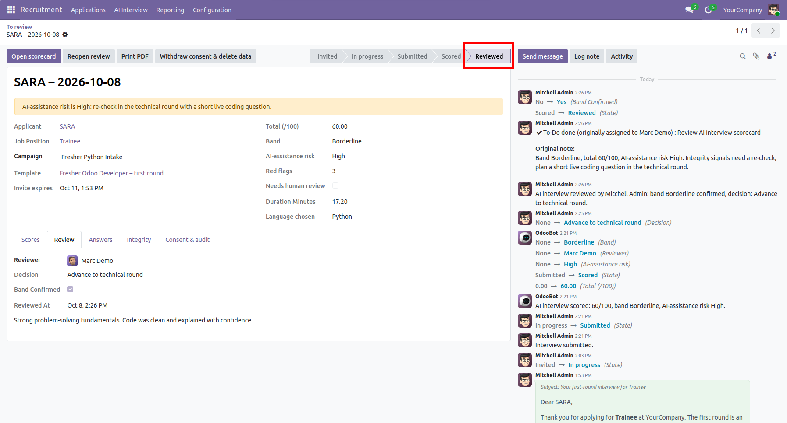
20. Automated Pipeline Stage Advancement
Upon confirming advancement, Linda automatically moves the applicant from the initial interview stage to the next recruitment pipeline column (e.g. Second Interview / Technical Round), eliminating manual stage drag-and-drop.
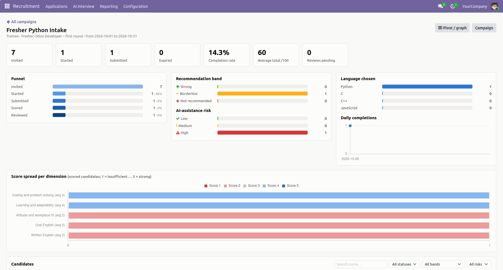
21. Comprehensive Applicant Record with AI Scorecard
The candidate's profile in Odoo Recruitment permanently retains the composite score, recommendation status, and link to the full evaluation scorecard, empowering hiring managers during final decision-making.
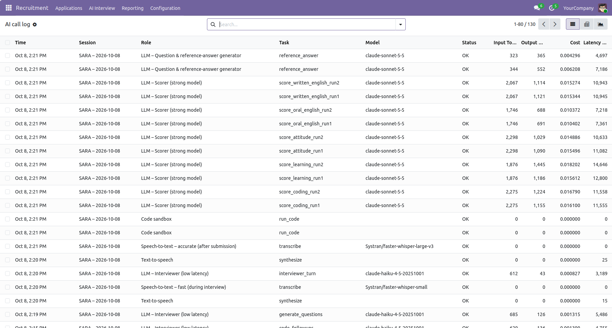
Multi-LLM & Voice Engine Agility
Supports Anthropic Claude (Haiku & Sonnet), OpenAI (GPT-4o), Groq, Deepgram speech-to-text, and ElevenLabs conversational speech synthesis.
Multi-Turn Voice Interviewing
Conducts dynamic, conversational spoken interviews that adapt follow-up questions in real-time based on the candidate's previous oral responses.
Sandboxed Code Execution
Live in-browser code editor that safely compiles and runs candidate Python solutions against pre-configured hidden test cases and edge validations.
AI-Powered Question Pool Generator
Built-in generation wizard quickly produces role-specific challenges across coding, concept explanation, and problem-solving with sample solutions.
Evidence-Based Rubric Scoring
Evaluates Attitude, Coding, Learning Agility, and English. Every criterion score is backed by exact transcript quotations for verifiable objectivity.
Anti-Cheating & Keystroke Dynamics
Tracks paste frequency, typing cadence bursts, and signs of LLM generation, flagging anomalous candidate sessions with high-risk badges.
Role-Based Interview Templates
Create reusable templates per job position (e.g. Trainee, Python Dev, Senior Architect) with custom time caps and stage weightings.
Candidate Self-Service Web Portal
Zero software installation required for candidates. Works seamlessly in any modern web browser with camera/microphone permissions.
Recruiter Triage Cockpit
Filter all pending sessions in the "To Review" queue. Sort by score, recommendation category, or anomaly flags for fast triage.
Automated Stage Advancement
Confirming an advance decision automatically moves the candidate to the next hiring stage in Odoo Recruitment and closes reviewer tasks.
Linda is an automated AI interviewer built directly inside Odoo 19. It dispatches first-round technical screening interviews via secure email invitations. Candidates enter a browser portal where Linda leads them through written questions, live Python coding challenges executed in a safe sandbox, and an interactive voice round. Once complete, Linda scores the candidate against objective rubrics and presents the findings to your recruiters for human review.
The module features an extensible provider architecture. Out of the box, it supports Anthropic Claude (Claude 3.5 Haiku and Sonnet), OpenAI (GPT-4o), and Groq for core LLM evaluation and dialogue. For audio synthesis and transcription, it connects with Deepgram and ElevenLabs. You can also configure test pings directly from Odoo to verify API credentials at any time.
No. Linda acts as an intelligent assistant that does the heavy lifting of conducting and scoring interviews. All final decisions remain strictly with your hiring managers and recruiters through our "Human-in-the-Loop" review gate. Recruiters can view all evidence, transcripts, and code runs before confirming an advance or rejection.
During the interview, the web portal records keystroke velocity, copy-paste bursts, and answer cadence. Answers are also scanned for telltale markers of generative AI. If suspicious activity is detected, Linda flags the session with an anomaly warning and increments a red flag counter for recruiter review.
Yes, completely. You have full control over templates, section sequences, time limits, question pools, and rubric criteria weights. You can maintain distinct templates for freshers, senior engineers, project managers, and QA specialists.
Yes. Linda – AI Interview is built natively on Odoo 19 and functions seamlessly in both Odoo Community and Odoo Enterprise environments.
Release 20.0.1.0.0 (Latest)
October, 2026- Official migration to Odoo 20.0.
- Migrated security architecture to unified
ir.accessmodel and rules format. - Updated System Parameter access to typed getters and setters (
get_str,get_int,get_bool). - Full support for Odoo 20 binary attachments and updated recruitment data models.
Release 19.0.1.1.0
October, 2026- Enhanced AI provider connectivity test with real-time ping validation and visual user notifications.
- Optimized candidate audio verification pre-flight checks and permissions handling.
- Improved human-in-the-loop review workflow and automatic pipeline stage progression.
- Added high-risk anomaly indicators and red-flag counter in the recruiter review queue.
Release 19.0.1.0.0
September, 2026- Initial release of Linda AI Interview for Odoo 19.
- Integrated candidate portal with real-time conversational voice and live code execution sandbox.
- 5-dimension evidence-based rubrics and automated scorecard generation.
- Full integration with Odoo Recruitment pipeline, smart buttons, and email invitation templates.